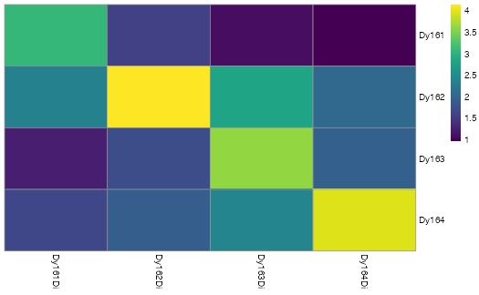
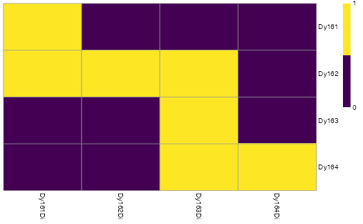
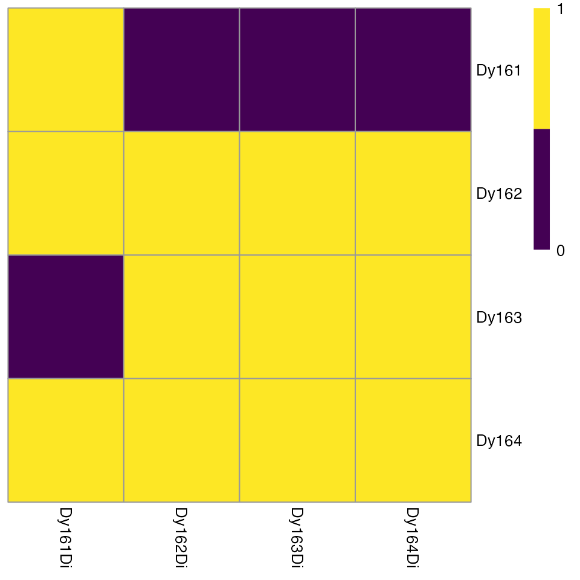

vignettes/imcRtools.Rmd
imcRtools.RmdAbstract
Abstract
The imcRtools package contains a number of example data generated by the Hyperion imaging system for different purposes. The following section gives an overview of these files.
To highlight the use of the imcRtools package for spillover correction, we provide four .txt files containing pixel intensities of four spotted metals.
These files are accesible via:
path <- system.file("extdata/spillover", package = "imcRtools")
path## [1] "/Users/runner/work/_temp/Library/imcRtools/extdata/spillover"To highlight reading in raw data in form of .txt files, the imcRtools contains 3 sample acquisitions:
txt_files <- list.files(system.file("extdata/mockData/raw",
package = "imcRtools"))
txt_files## [1] "20210305_NE_mockData2_ROI_001_1.txt" "20210305_NE_mockData2_ROI_002_2.txt"
## [3] "20210305_NE_mockData2_ROI_003_3.txt"Image objectsFor reading in and visualization of multi-channel images and segmentation masks, please refer to the cytomapper package. The imcRtools package however supports reading in raw .txt files generated by the Hyperion imaging system into a CytoImageList object; a data container exported by cytomapper.
The user needs to provide a path from which all .txt files will be read in:
path <- system.file("extdata/mockData/raw", package = "imcRtools")
cur_CytoImageList <- readImagefromTXT(path)
cur_CytoImageList## CytoImageList containing 3 image(s)
## names(3): 20210305_NE_mockData2_ROI_001_1 20210305_NE_mockData2_ROI_002_2 20210305_NE_mockData2_ROI_003_3
## Each image contains 5 channel(s)
## channelNames(5): Ag107Di Pr141Di Sm147Di Eu153Di Yb172DiWhen acquiring IMC images, pixel intensities can be influenced by spillover from neighbouring channels. To correct for this, Chevrier et al. have developed a staining protocol to acquire individually spotted metal isotopes (???). Based on these measurements, spillover into neighbouring channels can be quantified and pixel intensities can be deconvolved into true and spillover signal.
The imcRtools package provides helper functions that facilitate the correction of spillover for IMC data. For a full tutorial, please refer to the IMC data analysis book.
In the first step, the pixel intensities of individually spotted metals need to be read into a SingleCellExperiment container for downstream use with the CATALYST package. For this, the readSCEfromTXT function can be used:
path <- system.file("extdata/spillover", package = "imcRtools")
sce <- readSCEfromTXT(path)
sce## class: SingleCellExperiment
## dim: 4 400
## metadata(0):
## assays(1): counts
## rownames(4): 161Dy(Dy161Di) 162Dy(Dy162Di) 163Dy(Dy163Di)
## 164Dy(Dy164Di)
## rowData names(2): channel_name marker_name
## colnames(400): Dy161.1 Dy161.2 ... Dy164.99 Dy164.100
## colData names(9): Start_push End_push ... sample_metal sample_mass
## reducedDimNames(0):
## altExpNames(0):Here, the example metal spot files are read in. The spot information are stored in the colData(sce) slot and channel information are stored in rowData(sce). Each column represents a single pixel.
In the next step, it is crucial to identify potential mislabeled spots or spots with low pixel intensities, the imcRtools package exports the plotSpotHeatmap function, which visualizes the aggregated (default median) pixel intensities per spot and per metal:
plotSpotHeatmap(sce)
Here, high median pixel intensities can be observed in each spot an their corresponding channels (visualized on the log10 scale). To quickly identify spot/channel combinations with low signal, the threshold parameter can be set:
plotSpotHeatmap(sce, log = FALSE, threshold = 200)
If pixel intensities are low, spillover estimation might not be robust. Therefore, the binAcrossPixels function can be used to sum consecutive pixels and enhance the acquired signal. This step is optional for spillover estimation.
sce2 <- binAcrossPixels(sce, bin_size = 5)
plotSpotHeatmap(sce2, log = FALSE, threshold = 200)
## R version 4.0.5 (2021-03-31)
## Platform: x86_64-apple-darwin17.0 (64-bit)
## Running under: macOS Catalina 10.15.7
##
## Matrix products: default
## BLAS: /Library/Frameworks/R.framework/Versions/4.0/Resources/lib/libRblas.dylib
## LAPACK: /Library/Frameworks/R.framework/Versions/4.0/Resources/lib/libRlapack.dylib
##
## locale:
## [1] en_US.UTF-8/en_US.UTF-8/en_US.UTF-8/C/en_US.UTF-8/en_US.UTF-8
##
## attached base packages:
## [1] parallel stats4 stats graphics grDevices utils datasets
## [8] methods base
##
## other attached packages:
## [1] imcRtools_0.3.4 SingleCellExperiment_1.12.0
## [3] SummarizedExperiment_1.20.0 Biobase_2.50.0
## [5] GenomicRanges_1.42.0 GenomeInfoDb_1.26.7
## [7] IRanges_2.24.1 S4Vectors_0.28.1
## [9] BiocGenerics_0.36.1 MatrixGenerics_1.2.1
## [11] matrixStats_0.58.0 BiocStyle_2.18.1
##
## loaded via a namespace (and not attached):
## [1] bitops_1.0-7 fs_1.5.0
## [3] EBImage_4.32.0 RColorBrewer_1.1-2
## [5] rprojroot_2.0.2 tools_4.0.5
## [7] bslib_0.2.5.1 svgPanZoom_0.3.4
## [9] utf8_1.2.1 R6_2.5.0
## [11] vipor_0.4.5 colorspace_2.0-1
## [13] raster_3.4-10 sp_1.4-5
## [15] gridExtra_2.3 compiler_4.0.5
## [17] cli_2.5.0 textshaping_0.3.4
## [19] desc_1.3.0 DelayedArray_0.16.3
## [21] bookdown_0.22 sass_0.4.0
## [23] scales_1.1.1 readr_1.4.0
## [25] pkgdown_1.6.1 systemfonts_1.0.2
## [27] stringr_1.4.0 digest_0.6.27
## [29] tiff_0.1-8 fftwtools_0.9-11
## [31] svglite_2.0.0 rmarkdown_2.8
## [33] XVector_0.30.0 jpeg_0.1-8.1
## [35] pkgconfig_2.0.3 htmltools_0.5.1.1
## [37] sparseMatrixStats_1.2.1 highr_0.9
## [39] fastmap_1.1.0 htmlwidgets_1.5.3
## [41] rlang_0.4.11 rstudioapi_0.13
## [43] DelayedMatrixStats_1.12.3 shiny_1.6.0
## [45] jquerylib_0.1.4 jsonlite_1.7.2
## [47] BiocParallel_1.24.1 RCurl_1.98-1.3
## [49] magrittr_2.0.1 scuttle_1.0.4
## [51] GenomeInfoDbData_1.2.4 Matrix_1.3-2
## [53] Rcpp_1.0.6 ggbeeswarm_0.6.0
## [55] munsell_0.5.0 fansi_0.4.2
## [57] viridis_0.6.1 abind_1.4-5
## [59] lifecycle_1.0.0 stringi_1.6.2
## [61] yaml_2.2.1 zlibbioc_1.36.0
## [63] grid_4.0.5 promises_1.2.0.1
## [65] shinydashboard_0.7.1 crayon_1.4.1
## [67] lattice_0.20-41 beachmat_2.6.4
## [69] hms_1.1.0 locfit_1.5-9.4
## [71] ps_1.6.0 knitr_1.33
## [73] cytomapper_1.2.1 pillar_1.6.1
## [75] codetools_0.2-18 glue_1.4.2
## [77] evaluate_0.14 BiocManager_1.30.15
## [79] png_0.1-7 vctrs_0.3.8
## [81] httpuv_1.6.1 gtable_0.3.0
## [83] cachem_1.0.5 ggplot2_3.3.3
## [85] xfun_0.23 mime_0.10
## [87] xtable_1.8-4 later_1.2.0
## [89] viridisLite_0.4.0 ragg_1.1.2
## [91] pheatmap_1.0.12 tibble_3.1.2
## [93] beeswarm_0.3.1 memoise_2.0.0
## [95] ellipsis_0.3.2